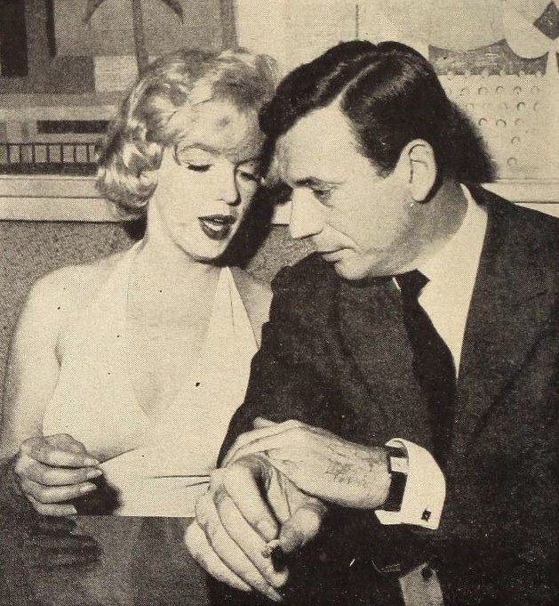
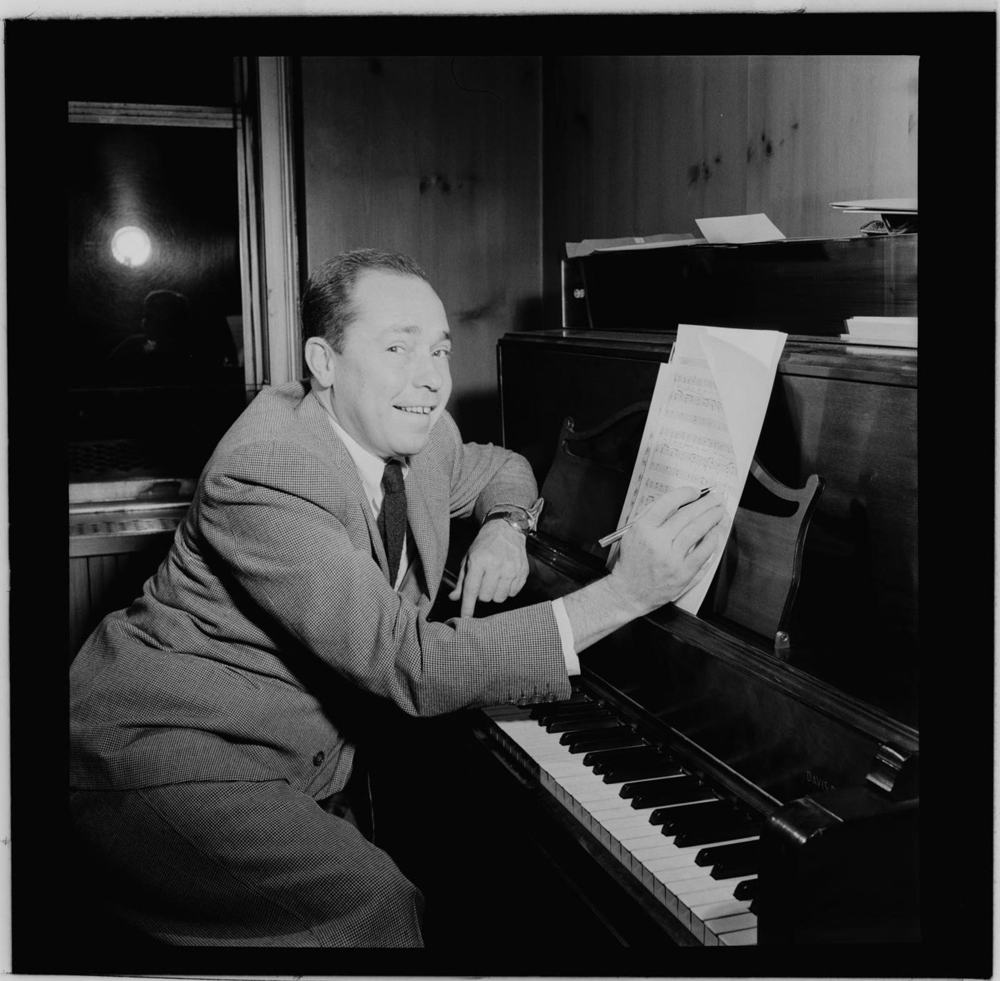

故事
每個學爵士的人都會彈的 Autumn Leaves，原本是一首法國歌。它的旋律，是作曲家 Joseph Kosma 寫的。1946 年，法國電影 Les Portes de la nuit 用了這首歌。
原本的法文歌名，意思是枯葉。後來美國作詞人 Johnny Mercer，替它寫了英文歌詞。1955 年，Roger Williams 的鋼琴版本，衝上美國排行榜第一名。

爵士樂手愛它，是因為和弦一圈一圈往下走，很好即興。1959 年，Bill Evans 三重奏錄的版本，到現在還是經典。下次聽到 Autumn Leaves，想想它從巴黎的電影院，一路飄進爵士俱樂部。
故事後面
Autumn Leaves 的旋律是作曲家 Joseph Kosma 寫的，一九四六年出現在法國電影裡，法文原名意思是「枯葉」。
Johnny Mercer 寫了英文歌詞，一九五五年 Roger Williams 的鋼琴版衝上美國排行榜第一名。
它的和弦一圈一圈往下走，很好即興，成了學爵士的人必練的曲子。

這樣聽
聽鋼琴、貝斯、鼓三個人像在對話，沒有誰只負責伴奏。
逐句英文
Autumn Leaves, which every jazz student plays, began as a French song.
Its melody was written by composer Joseph Kosma.
In 1946 the French film Les Portes de la nuit featured the song.
Its French title means dead leaves.
American lyricist Johnny Mercer later wrote English words for it.
In 1955 a piano version by Roger Williams hit No. 1 in the US.
Jazz players love it because its chords cycle downward, perfect for improvising.
The 1959 Bill Evans Trio version is still a classic.
Next time you hear Autumn Leaves, picture it drifting from a Paris cinema into the jazz club.
查證筆記與出處
曲子最早用於一九四五年的芭蕾，稿裡從電影講起。Mercer 英文版年份一九四七或一九四九說法不一，稿裡不寫年份。
https://en.wikipedia.org/wiki/Autumn_Leaves_(1945_song)
https://en.wikipedia.org/wiki/Portrait_in_Jazz
一分鐘影片版在 Instagram @jazz101tw。